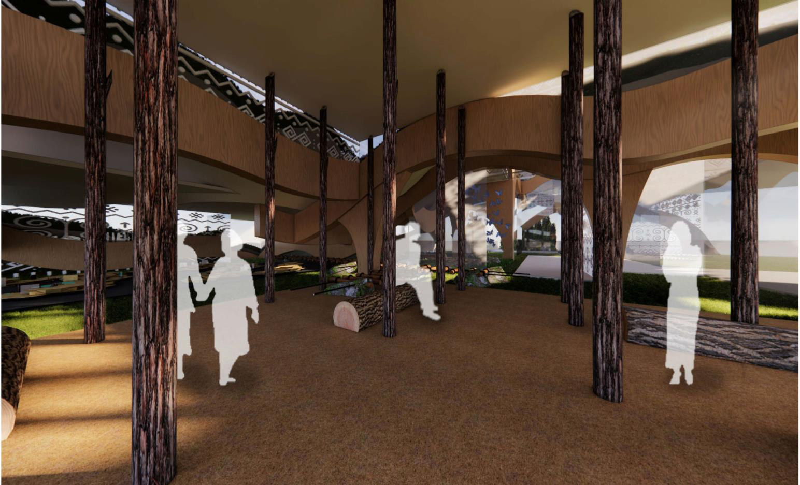
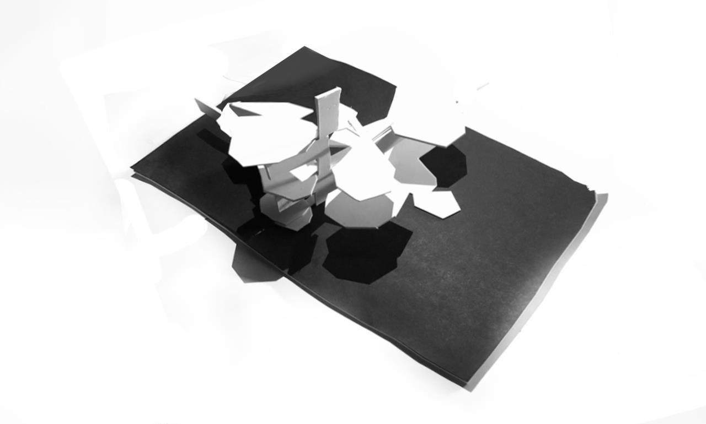

The Jungle
Site analysis, concept diagrams, masterplan, ground floor, and renderings — from comprehensive analysis through south and east elevations.
01 — The Jungle
Introduction of an urban perspective to produce green spaces managed by the private sector — activating the carpark, green elements, and enforcing identity on Koh Pich, Phnom Penh.
Walk the proposal in 360° — six viewpoints, floor-plan hotspots, and immersive site documentation.
Portfolio
Academic architecture work in Phnom Penh and beyond — urban green networks, housing that reconnects culture and landscape, and formal design experiments. Spatial training that informs my urban analytics research.
Koh Pich, Phnom Penh — connecting fragmented green into a civic network around City Hall through carparks, landscape, and activated public space.
Site analysis, concept diagrams, masterplan, ground floor, and renderings — from comprehensive analysis through south and east elevations.
A residential project on former lake land (Beoung Kok) — reconnecting culture, water memory, and landscape in dense Phnom Penh. Site area 24,500 m².

Location and site, conceptual form, floor plans, family unit, renderings, and sliding/pivoting facade studies — one continuous project on 24,500 m².
Competition entries and formal studies across academic years — atmosphere, material, and geometry.

Slovak Exhibition Expo competition — forest, exhibition, and cave spaces exploring territory and culture.

Cubist form from The Accordionist — solid, reflective, transparent materials with load-bearing, frame, and tensile structure.

Geometric composition, crystal subtraction, and panelized enclosure — interior and exterior in one language.